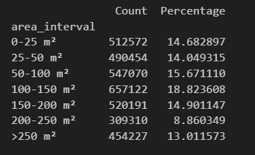
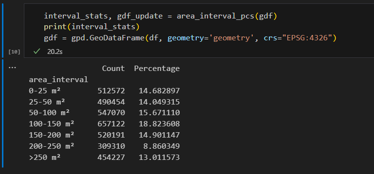
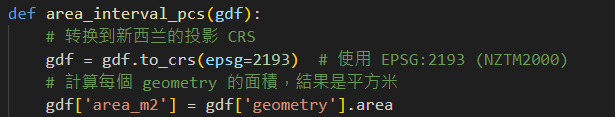
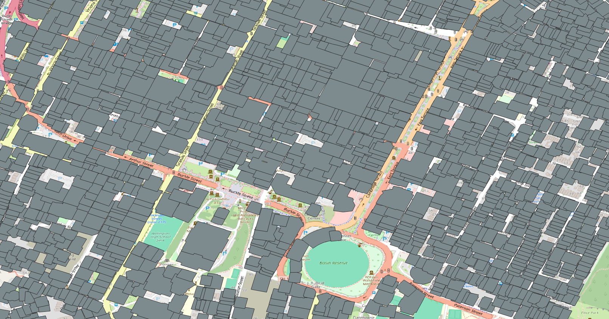
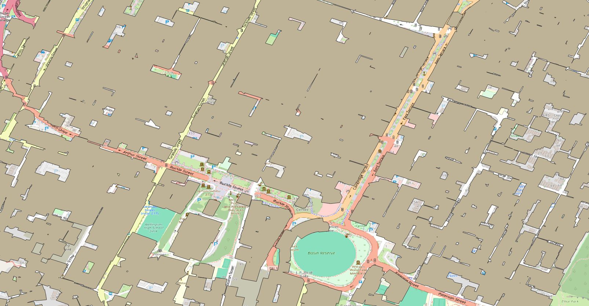

step 1+2+3: run PU_building.py in vscode by jupygter
calculate building area interval

-
PCS V.S. GCS
PCS GCS cost time 20 seconds 5 mins 20 seconds adaptability low high screen shot  
method  
buffer & filter & merge
- building count: 3490946 -> 524750(15%)
| area | Raw Data | Buffer (10 meter) + Filter (100 m²) | Merged |
|---|---|---|---|
| urben area(wellington) |  |
 |  |
- to select indicated area for visolization, run
select_area.py
(in progress)fill in hallow
| Before | After |
|---|---|
 |